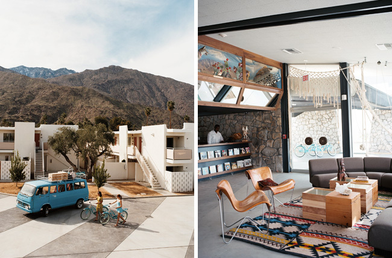

Ace Hotel and Swim Club by Commune Design
Commune did a fantastic job designing the renovation of a 1950’s style motel into one of premiere locations for the boutique hotelier Ace Hotel. If you’re ever traveling to New York, Portland, Seattle or Palm Springs look into staying at Ace.
Take the time to explore Commune’s other retail, office, and restaurant design. Their portfolio is full of great work.